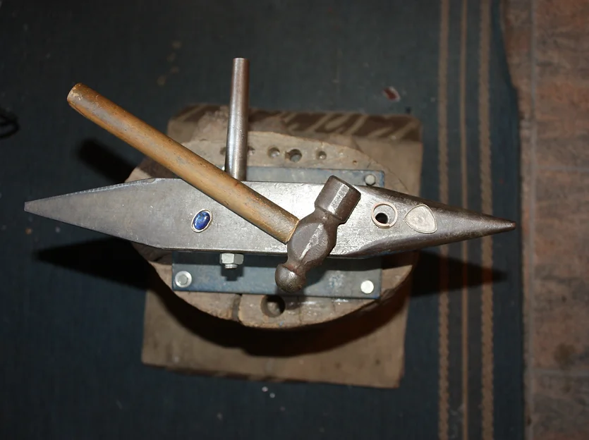

Servus
Ich bin der Sepp, leidenschaftlicher Künstler mit jahrelanger Erfahrung. Ich mache Schmuck aus 100% Handarbeit. Jedes Stück ist ein Unikat und entsteht mit Liebe zum Detail.
Ich bin der Sepp, leidenschaftlicher Künstler mit jahrelanger Erfahrung. Ich mache Schmuck aus 100% Handarbeit. Jedes Stück ist ein Unikat und entsteht mit Liebe zum Detail.

Mithilfe traditioneller Verfahren und Werkzeuge werden die Ringe gefertigt. Alle meine Ringe sind Einzelstücke und können nach deinen eigenen Wünschen angepasst werden.
Stellen Sie gemeinsam mit mir ein einzigartiges Schmuckstück her. Lernen Sie mein Handwerk kennen und erschaffen Sie Ihr eigenes Unikat.
 |
 |
 |
 |

Die Werkstatt ist mit alten Werkzeugen und Maschinen ausgestattet, die Sepp mit viel Geschick und Leidenschaft bedient. Er verwendet nicht nur Silber, sondern auch Gold, Platin und Edelsteine. Kunden schätzen seine Handwerkskunst und Qualität.